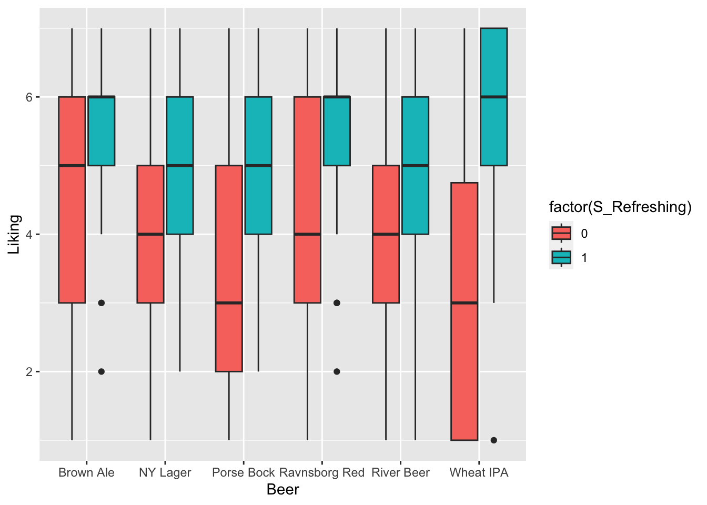

Chapter 16 CATA and Hedonics
Certain attributes like floral is wanted in beer, while others may be unwanted, and hence detection of these attributes can have hedonic impact. This analysis can be evaluated for each attribute separately or all collectively using PCA.
These data appears as two separate dataset, and hence need to be joint:
library(data4consumerscience)
library(tidyverse)
data("beercata")
data("beerliking")
xbeer <- beerliking %>%
left_join(beercata, by = c('Beer','Consumer.ID'))16.1 Individual attributes and liking
16.1.1 An example with Refreshing

From this plot it seems as if checking of the attribute Refreshing leads to higher liking score. Further, this is even more so for light-colored beers like Wheat IPA and Porse Bock.
A model capturing this phenomena could be a linear model with interactions:
library(lme4)
library(lmerTest)
mdl <- lmerTest::lmer(data = xbeer, Liking~factor(S_Refreshing)*Beer + (1|Consumer.ID))
anova(mdl)## Type III Analysis of Variance Table with Satterthwaite's method
## Sum Sq Mean Sq NumDF DenDF F value Pr(>F)
## factor(S_Refreshing) 316.30 316.30 1 901.60 141.9478 < 2.2e-16 ***
## Beer 75.61 15.12 5 783.91 6.7864 3.309e-06 ***
## factor(S_Refreshing):Beer 48.91 9.78 5 877.05 4.3894 0.0005933 ***
## ---
## Signif. codes: 0 '***' 0.001 '**' 0.01 '*' 0.05 '.' 0.1 ' ' 1All terms are significant and we are interested in the individual beer effects. We re-parametrice the model by removing the intercept (adding -1 at the end of the formula) and not including the main effect of S_Refreshing (change * to : in interaction, and add Beer as main effect).
mdl2 <- lmerTest::lmer(data = xbeer, Liking~Beer + factor(S_Refreshing):Beer + (1|Consumer.ID) - 1)
summary(mdl2)## Linear mixed model fit by REML. t-tests use Satterthwaite's method ['lmerModLmerTest']
## Formula: Liking ~ Beer + factor(S_Refreshing):Beer + (1 | Consumer.ID) - 1
## Data: xbeer
##
## REML criterion at convergence: 3446.5
##
## Scaled residuals:
## Min 1Q Median 3Q Max
## -2.87114 -0.67445 0.08872 0.70059 2.46378
##
## Random effects:
## Groups Name Variance Std.Dev.
## Consumer.ID (Intercept) 0.2706 0.5202
## Residual 2.2283 1.4928
## Number of obs: 920, groups: Consumer.ID, 155
##
## Fixed effects:
## Estimate Std. Error df t value Pr(>|t|)
## BeerBrown Ale 5.1235 0.1713 905.0570 29.905 < 2e-16 ***
## BeerNY Lager 4.5212 0.1471 891.2430 30.733 < 2e-16 ***
## BeerPorse Bock 4.2747 0.1322 869.6115 32.335 < 2e-16 ***
## BeerRavnsborg Red 4.9078 0.1350 874.8096 36.349 < 2e-16 ***
## BeerRiver Beer 4.2451 0.1332 872.0429 31.864 < 2e-16 ***
## BeerWheat IPA 4.2981 0.1329 871.0139 32.332 < 2e-16 ***
## BeerBrown Ale:factor(S_Refreshing)1 -0.3340 0.1694 883.0668 -1.972 0.048964 *
## BeerNY Lager:factor(S_Refreshing)1 -0.5176 0.1449 882.6727 -3.573 0.000372 ***
## BeerPorse Bock:factor(S_Refreshing)1 -0.7714 0.1297 883.4564 -5.947 3.92e-09 ***
## BeerRavnsborg Red:factor(S_Refreshing)1 -0.7095 0.1326 883.8535 -5.352 1.11e-07 ***
## BeerRiver Beer:factor(S_Refreshing)1 -0.6040 0.1308 884.3471 -4.618 4.44e-06 ***
## BeerWheat IPA:factor(S_Refreshing)1 -1.2025 0.1304 882.8483 -9.219 < 2e-16 ***
## ---
## Signif. codes: 0 '***' 0.001 '**' 0.01 '*' 0.05 '.' 0.1 ' ' 1
##
## Correlation of Fixed Effects:
## BrBrwA BrNYLg BrPrsB BrRvnR BrRvrB BrWIPA BBA:(S BNYL:( BPB:(S BRR:(S BRB:(S
## BeerNYLager 0.069
## BeerPorsBck 0.080 0.090
## BrRvnsbrgRd 0.079 0.089 0.099
## BeerRiverBr 0.076 0.090 0.099 0.096
## BeerWhetIPA 0.078 0.091 0.100 0.099 0.099
## BrBA:(S_R)1 -0.664 0.000 -0.004 -0.005 0.000 -0.001
## BNYL:(S_R)1 0.001 -0.496 0.001 -0.002 -0.001 -0.002 0.000
## BrPB:(S_R)1 -0.009 0.002 -0.268 -0.003 -0.002 0.000 0.014 -0.005
## BrRR:(S_R)1 -0.009 -0.003 -0.003 -0.332 0.003 -0.004 0.014 0.006 0.010
## BrRB:(S_R)1 0.003 -0.002 -0.001 0.004 -0.293 -0.001 -0.001 0.004 0.008 -0.009
## BWIPA:(S_R) -0.002 -0.003 0.001 -0.004 -0.001 -0.276 0.003 0.006 -0.002 0.012 0.004Here we see that the attribute will increase the liking by \(0.7\) points for Brown Ale and up to \(2.4\) points for Wheat IPA.
16.1.2 All attributes
We can visualize for all attributes:
g1 <- xbeer %>%
pivot_longer(names_to = 'cata',values_to = 'val',cols = S_Flowers:S_Vinous) %>%
ggplot(data = ., aes(Beer, Liking, fill = factor(val))) +
geom_boxplot() +
theme(axis.text.x = element_text(angle = 79, hjust = 1), legend.position = 'bottom') +
facet_wrap(~cata, ncol = 4)
g1 For each attribute an interaction model will be used to qualify further analysis.
library(broom)
library(broom.mixed)
tb <- xbeer %>%
pivot_longer(names_to = 'cata',values_to = 'val',cols = S_Flowers:S_Vinous) %>%
dplyr::group_by(cata) %>%
do(lmer(data = ., Liking~factor(val)*Beer + (1|Consumer.ID)) %>% anova %>% tidy)This table has both main effect of the beer and cata-attribute as well their interaction.
This print out shows the attributes related to liking - overall.
## # A tibble: 27 × 8
## # Groups: cata [27]
## cata term sumsq meansq NumDF DenDF statistic p.value
## <chr> <chr> <dbl> <dbl> <int> <dbl> <dbl> <dbl>
## 1 S_Refreshing factor(val) 316. 316. 1 902. 142. 1.70e-30
## 2 S_Sour factor(val) 129. 129. 1 905. 51.2 1.73e-12
## 3 S_Caramel factor(val) 23.6 23.6 1 899. 8.92 2.90e- 3
## 4 S_Herbs factor(val) 23.3 23.3 1 905. 8.84 3.02e- 3
## 5 S_Sweet factor(val) 21.8 21.8 1 897. 8.22 4.25e- 3
## 6 S_Regional spices factor(val) 19.4 19.4 1 903. 7.43 6.54e- 3
## 7 S_Sparkling factor(val) 19.3 19.3 1 865. 7.33 6.90e- 3
## 8 S_Bitter factor(val) 17.9 17.9 1 907. 6.76 9.45e- 3
## 9 S_Dessert spices factor(val) 16.5 16.5 1 908. 6.28 1.24e- 2
## 10 S_Liquor factor(val) 16.0 16.0 1 908. 6.00 1.45e- 2
## # ℹ 17 more rowsThe strongest ones are S_Refreshing, S_Sour, etc. while the presence of S_Warming, S_Pungent etc. has no effect on liking.
## # A tibble: 6 × 8
## # Groups: cata [6]
## cata term sumsq meansq NumDF DenDF statistic p.value
## <chr> <chr> <dbl> <dbl> <int> <dbl> <dbl> <dbl>
## 1 S_Refreshing factor(val):Beer 48.9 9.78 5 877. 4.39 0.000593
## 2 S_Fruity factor(val):Beer 55.8 11.2 5 873. 4.30 0.000711
## 3 S_Nuts factor(val):Beer 32.2 6.44 5 872. 2.44 0.0329
## 4 S_Smoked factor(val):Beer 30.2 6.05 5 876. 2.29 0.0441
## 5 S_Citrus fruit factor(val):Beer 29.2 5.84 5 879. 2.21 0.0510
## 6 S_Regional spices factor(val):Beer 27.8 5.57 5 873. 2.13 0.0595This table shows that S_Refreshing, S_Fruity, etc. has differential impact on the liking dependent on the beer it is detected in.
A deep dive into the effect can be done using the setup with a single variable above using the tidyverse and broom framework.
tb2 <- xbeer %>%
pivot_longer(names_to = 'cata',values_to = 'val',cols = S_Flowers:S_Vinous) %>%
dplyr::group_by(cata) %>%
do(lmer(data = ., Liking~Beer + factor(val):Beer + (1|Consumer.ID) - 1) %>% tidy(conf.int = T))tb2 %>%
filter(str_detect(term,'factor')) %>% # filter to get individual beer differences.
filter(cata %in% tb$cata[tb$term=='factor(val):Beer' & tb$p.value<0.05]) %>% # include only interesting ones.
ggplot(data = ., aes(substr(term,5,14), estimate, ymin = conf.low, ymax = conf.high)) +
geom_point() +
geom_errorbar() + facet_wrap(~cata) +
geom_hline(yintercept = 0) + theme(axis.text.x = element_text(angle = 79, hjust = 1)) +
xlab('Beer')The interpretation is that detecting Smoked in e.g. Ravnsborg Red tends to be positive, while it is pretty bad in Wheat IPA. Similarly, Fruity is related to higher liking in Wheat IPA and Porse Bock but a bad thing in River Beer. Nutty only matters on liking in Ravnsborg Red and River beer.
16.2 PCA on CATA and Liking
A PCA on the agglomerated CATA counts including the liking will reveal the attributes associated with the individual products, and which attributes are correlated with the liking.
xbeeragglom <- xbeer %>%
pivot_longer(names_to = 'cata',values_to = 'val',cols = c(S_Flowers:S_Vinous, Liking)) %>% #looong format for all variables
dplyr::group_by(Beer,cata) %>% # summarize for each beer type
dplyr::summarise(yy = mean(val, na.rm = T)) %>%
spread(cata,yy) # wide formatmdlPCAcataliking <- prcomp(xbeeragglom[,-1], scale. = T)
ggbiplot::ggbiplot(mdlPCAcataliking, labels = xbeeragglom$Beer)The attributes Bean, Caramel, Warming, Aromatic etc is associated to the beer Brown ale, while Berrie, Dessert, Pungent, etc. is characteristic of Wheat IPA. Further, Liking is associated with all attributes on the first component, such as Aromatic, Warming, etc.
16.2.1 A beer centric model
The above PCA shows general good- and bad attributes in terms of liking. However, the univariate analysis indicated that for some beers e.g. Smoked was a good thing while for others not so much.
For that reason we can build a PCA for each beer to see which attributes that drives liking
xbeer_pca <- xbeer[complete.cases(xbeer),]
PCAmdl_RR <- prcomp(xbeer_pca[xbeer_pca$Beer=='Ravnsborg Red',14:41], scale. = T)
ggbiplot::ggbiplot(PCAmdl_RR)
Caramel, Savoury spices and Reefreshing is promoting liking, while Sour is not.
16.3 Analysis by PLS
The data used in this section is from the paper: Giacalone, Davide, Wender L.P. Bredie, and Michael Bom Frøst. “‘All-In-One Test’ (AI1): A Rapid and Easily Applicable Approach to Consumer Product Testing.” Food quality and preference 27.2 (2013): 108–119. Web.. Data can be found in the data4consumerscience-package as beercata, beerliking
16.3.1 PLS basics
Partial Least Squares regression (PLS) is a linear regression approach that shares similarities with Principal Component Analysis (PCA), as data is decomposed using latent variables. In the case of PLS there are two matrices: predictors(\(\boldsymbol{X}\)) and response(\(\boldsymbol{Y}\)). The X-matrix is used to predict the Y-matrix. For both matrices the scores and loadings and resiudals are computed:
\[X = TP^T + E_x\] \[Y = UQ^T + E_y\]
PLS orient latent variables to optimize covariance between X-scores (\(\boldsymbol{T}\)) and Y-scores (\(\boldsymbol{U}\)), overcoming limitations of traditional Multiple Linear Regression, such as handling cases where variables outnumber observations or when X-variables are mutually correlated.
16.3.2 PLS to predict liking based on CATA data
The object of this section is to find which descriptors e.g. sour, is relevant for the liking, and which are irrelevant.
When dealing with CATA data, it’s reasonable to anticipate a low explained variance in the model due to the high degree of uncertainty within the CATA data itself. This means that as PLS attempts to distinguish information from noise, the noise will account for a large amount of variation in the data.
As preparation for the PLS, the two datasets beerliking and beercata is combined:
library(dplyr)
library(data4consumerscience)
data("beerliking")
data("beercata")
#Merge the two datasets:
beer <- na.omit(left_join(beercata, beerliking, by = c("Consumer.ID", "Beer")))A dataframe is created by merging the two previously mentioned datasets, by the function left_join, based on the common columns Consumer.ID and Beer. na.omit is used to remove rows containing missing values, as the PLS function to be used later on, can not handle missing values in the variables used.
The PLS model can be built with relative ease using the mdatools package:
library(mdatools)
#Create the PLS object:
beerPLS <- pls(x = beer[,3:29],y = beer$Liking ,center = T,scale = F,ncomp = 10)
summary(beerPLS)##
## PLS model (class pls) summary
## -------------------------------
## Info:
## Number of selected components: 10
## Cross-validation: none
##
## X cumexpvar Y cumexpvar R2 RMSE Slope Bias RPD
## Cal 49.051 23.667 0.237 1.535 0.237 0 1.15The pls function is used, and the predictors is put as the x-value, i.e. the CATA variables in column 3 to 29. and the response i.e. liking. Both the y and x matrices are mean-centered, by specifying center = T, the scale argument specifies if the data should be Auto-scaled. ncomp argument specifies how many components should be calculated - in this case 4.
The model gives a warning of no validation results found. This is referring to the cross-validation that can be done, to find the optimal number of components needed to describe the optimal complexity of the model. Let us add cross-validation to the model:
#Create the PLS object:
beerPLSCV <- pls(x = beer[,3:29],y = beer$Liking ,center = T,scale = F,ncomp = 10,cv = rep(rep(1:length(unique(beer$Consumer.ID)), each = 6), length.out = nrow(beer)))The cross-validation used is specified in the cv argument. The argument takes a vast majority of inputs. Perhaps the easiest to use is Leave-One-Out cross-validation that is specified by cv = 1, but might also leave to overoptimistic results. In this case we cross-validate based on the consumer, i.e. we obtain a vector containing 1,1,1,1,1,1…155,155,155,155,155,155 corresponding to the 6-times each consumer answered.
The summary function can be used to see various information about the PLS model:
##
## PLS model (class pls) summary
## -------------------------------
## Info:
## Number of selected components: 2
## Cross-validation: user defined with 154 segments
##
## X cumexpvar Y cumexpvar R2 RMSE Slope Bias RPD
## Cal 15.8701 23.04695 0.230 1.541 0.230 0e+00 1.14
## Cv NA NA 0.192 1.579 0.209 -4e-04 1.11The summary seems to think 2 components is the optimal amount.
Let us plot the RMSE and see if this correct:
The increase in the RMSECV from components 2 to 3, seems to indicate that the optimal number of components is indeed 2.
16.3.3 Regression coefficients
In Partial Least Squares (PLS) regression, a regression vector refers to the set of coefficients that are used to model the relationship between the predictor variables (\(\boldsymbol{X}\)) and the response variable (\(\boldsymbol{Y}\)). These coefficients define how much each predictor variable contributes to predicting the response variable (in this case liking).
The regression coefficients can easily be visualized using the mdatools package:
The function plotRegcoeffs is used, and the PLS object is specified. show.labels = T specifies the labels from \(\boldsymbol{X}\) is printed on the bars. show.ci = T specifies that the confidence interval is displayed on the bars. ncomp specifies the component the regression coefficents should be displayed for.
From the regression vector plot, it seems the attributes S_Sour, S_Herbs and S_Regional_Spices significantly lowers the liking of the beers. The attributes S-Refreshing, S_aromatic, S_caramel among others seems to significantly increase the liking of the beers. In addition there are irrelevant non-significant attributes (i.e. confidence interval crossing 0) such as S_foamy and S_Berries among many other attributes.
The significance of the attributes can also be displayed in a table with coefficients, t-values, p-values and confidence interval:
##
## Regression coefficients for y1 (ncomp = 2)
## ------------------------------------------
## Coeffs Std. err. t-value p-value 2.5% 97.5%
## S_Flowers -0.23158042 0.12595803 -1.84 0.068 -0.48042189 0.0172610442
## S_Beans 0.26714365 0.12975840 2.06 0.041 0.01079422 0.5234930834
## S_Intense berries -0.22999841 0.13533738 -1.70 0.091 -0.49736963 0.0373728119
## S_Caramel 0.58173722 0.12272329 4.74 0.000 0.33928627 0.8241881690
## S_Nuts 0.26746273 0.11940662 2.24 0.027 0.03156418 0.5033612878
## S_Savoury spices -0.07635781 0.14161814 -0.54 0.590 -0.35613724 0.2034216103
## S_Dessert spices 0.14026558 0.10791024 1.30 0.196 -0.07292084 0.3534519969
## S_Regional spices -0.24669084 0.12451962 -1.98 0.049 -0.49269060 -0.0006910843
## S_Herbs -0.33669422 0.12705252 -2.65 0.009 -0.58769796 -0.0856904922
## S_Citrus fruit 0.14651136 0.12850156 1.14 0.256 -0.10735509 0.4003778041
## S_Berries -0.03738398 0.07788665 -0.48 0.632 -0.19125610 0.1164881319
## S_Fruit -0.10048664 0.10640048 -0.95 0.346 -0.31069041 0.1097171243
## S_Dried fruit -0.14333307 0.11675004 -1.23 0.221 -0.37398332 0.0873171737
## S_Liquor -0.08094431 0.11402110 -0.71 0.479 -0.30620328 0.1443146697
## S_Bitter -0.02127784 0.11270667 -0.19 0.851 -0.24394004 0.2013843604
## S_Sparkling 0.20738928 0.12043143 1.72 0.087 -0.03053389 0.4453124582
## S_Refreshing 1.31766090 0.09824734 13.41 0.000 1.12356440 1.5117574043
## S_Fruity 0.01962225 0.12319224 0.16 0.874 -0.22375515 0.2629996473
## S_Aromatic 0.51375513 0.13593047 3.78 0.000 0.24521221 0.7822980524
## S_Pungent 0.01840210 0.13739938 0.13 0.894 -0.25304279 0.2898469894
## S_Still 0.08924425 0.11883316 0.75 0.454 -0.14552139 0.3240098869
## S_Smoked 0.04938012 0.14238940 0.35 0.729 -0.23192299 0.3306832346
## S_Foamy 0.20780879 0.14847629 1.40 0.164 -0.08551954 0.5011371156
## S_Sour -0.79570400 0.11338898 -7.02 0.000 -1.01971417 -0.5716938406
## S_Sweet 0.33782992 0.13330829 2.53 0.012 0.07446735 0.6011924920
## S_Warming 0.28930069 0.12015252 2.41 0.017 0.05192853 0.5266728446
## S_Vinous -0.06800759 0.08998145 -0.76 0.451 -0.24577407 0.1097588894
##
## Degrees of freedom (Jack-Knifing): 153These results are in line, with the visual interpretation above.
There are many other interesting plot methods, which can be found here: mdatools.com
16.4 L-PLS
The data used in this section is from the paper: Giacalone, Davide, Wender L.P. Bredie, and Michael Bom Frøst. “‘All-In-One Test’ (AI1): A Rapid and Easily Applicable Approach to Consumer Product Testing.” Food quality and preference 27.2 (2013): 108–119. Web.. Data can be found in the data4consumerscience-package as beercata, beerdemo, beerliking
L-PLS is a valuable tool in identifying the sensory attributes and consumer background characteristics that contribute to a consumer’s liking of a product, such as beer.
A L-PLS model is created using three data blocks: X1, X2, and X3. X1 is an IxN matrix that contains consumer liking scores for each sample, X2 is an IxJ matrix that includes sensory attributes for each sample, and X3 is a KxN matrix that comprises consumer background data. I represents the number of samples (beer), N represents the number of consumers, J represents the number of sensory variables, and K represents the number of consumer background variables.
There are two ways to perform L-PLS: exo and endo. In the exo-LPLSR model, X1 serves as the regressor, while in the endo-LPLSR model, X2 and X3 are the regressors. The exo-LPLSR model typically explains more of X than the endo-LPLSR model because the exo-LPLSR derives its bilinear components from X, whereas the endo-LPLSR derives its components from Y and Z. The difference in the plot’s appearance can be predicted from the explained variance of each model type.
If both plots are similar in nature and in terms of the interpretation of the correlation loading plots, it may indicate consistent co-variation between the three matrices.
The exo version will only be showcased here, but the principle is the same, and endo can be useful for data exploration.
16.5 Creating X1, X2, X3.
The preparation of the data, requires quite a lot of data manipulation.
# Load necessary libraries
library(tidyverse)
library(tibble)
# Prepare data for LPLS analysis
## Y - Beer Liking data
X1 <- beerliking %>%
select(Beer, Liking, Consumer.ID) %>%
pivot_wider(names_from = Consumer.ID, values_from = Liking) %>%
column_to_rownames("Beer") %>%
select_if(~!any(is.na(.)))
## X - Beer Attributes data
colnames(beercata) <- gsub("S_", "", colnames(beercata))
X2 <- beercata %>%
select(Beer, Flowers:Vinous) %>%
pivot_longer(cols = !Beer, names_to = "Attribute", values_to = "Value") %>%
group_by(Beer, Attribute) %>%
dplyr::summarise(Sum_value = sum(Value)) %>%
pivot_wider(names_from = "Attribute", values_from = "Sum_value", values_fill = 0) %>%
column_to_rownames("Beer")
## Z - Consumer Demographics data
# select subset of columns and create binary columns for categorical variables
binary_cols <- c("Gender", "Age", "Income", "Householdsize", "Beer types/month")
for (col in binary_cols) {
if (is.factor(beerdemo[[col]]) | is.character(beerdemo[[col]])) {
levels <- unique(beerdemo[[col]])
for (level in levels) {
new_col <- paste(col, level, sep = "_")
beerdemo[[new_col]] <- ifelse(beerdemo[[col]] == level, "1", "0")
}
}
}
# pivot longer and summarize to calculate sum values for each Consumer ID-Attribute combination
X3 <- beerdemo %>%
select(-(Gender:`Beer types/month`),`Interest in food`:`Beer types/month_9 - 16`,`Consumer ID`) %>%
mutate_at(vars(-`Consumer ID`),
.funs = list(~as.factor(.) %>% as.numeric())) %>%
pivot_longer(cols =`Interest in food`:`Beer types/month_9 - 16` , names_to = "Attribute", values_to = "Value") %>%
group_by(`Consumer ID`, Attribute) %>%
dplyr::summarise(sum_Value = sum(Value)) %>%
pivot_wider(names_from = "Consumer ID", values_from = "sum_Value", values_fill = 0) %>%
column_to_rownames("Attribute")
# keep only columns in Y
col_names <- names(X1)
X3 <- X3[,col_names]
# LPLS function only accepts matrix. Convert data frames to matrices.
X1_mat <- as.matrix(X1)
X2_mat <- as.matrix(X2)
X3_mat <- as.matrix(X3)16.6 Building the model: The L-PLS model can be built, using the lpls
function from the multiblock package.
library(multiblock)
set.seed(123)
#Scale the Z-matrix as we have semi-contious and binary data.
lp_exo <- lpls(X1_mat,X2_mat,X3_mat,type = "exo",scale = c(F,F,T),doublecenter = T,ncomp = 5)16.6.1 Finding the explained variance for exo L-PLS
The explained variance for the exo L-PLS can easily be sacked from the model object, and displayed nicely in a table using the kableExtra package.
library(knitr)
library(kableExtra)
expVarExo <- t(as.data.frame(lp_exo$vars)*100)
colnames(expVarExo) <- paste0("Comp ", 1:5)
rownames(expVarExo) <- paste0("X", 1:3)
#Create a table
kbl(expVarExo, caption = "Explained Variance by Component (%)",digits = 0) %>%
kable_paper("hover",full_width = F)The explained variance is first sacked from the L-PLS object, and stored in a data-frame, from where it is transposed, and converted to percentage (%). kbl function is then used to get a nice table.
From looking at the table, one would expect the consumer descriptors to be close to origin in terms of scores. One could have a look at the endo version of the L-PLS to get a better understanding of the consumer descriptors.
16.6.2 Cross-validation Next let us have a look how many components we
should look at, by doing a jack-knifing cross-validation on the consumers:
It looks like 2 components is sufficient.
16.6.3 Vizulization Now we would like to visuzlalize our L-PLS model. When
using L-PLS for vizulization one should use the orthognoal exo, as this will give the orthogonal scores. We build the orthogonal exo in the same way as before, but chainging the type.
lp_exo_ort <- lpls(X1_mat,X2_mat,X3_mat,type = "exo_ort",scale = c(F,F,T),doublecenter = T,ncomp = 5)Now we plot the L-PLS model. One can chose to plot, the X1, X2 or X3 correlations, or perhaps a combination of 2, or all.
par(mfrow=c(2,2))
plot(lp_exo,doplot = c(F,F,T)) #X3 correlations
plot(lp_exo,doplot = c(F,T,F)) #X1 correlations
plot(lp_exo,doplot = c(T,T,F)) #X2 and X1 correlations
plot(lp_exo,doplot = c(F,T,T)) #X1 and X3 correlationsFrom the plots, the sensory attribute Berries is correlated with the sensory attribute Herbs. These two sensory attributes is in turn correlated with the beer River Beer. In turn River Beer is opposite of the beer Brown Ale, which seems to be very Foamy. In this case our consumer background descriptors do not seem to explain a whole lot. But it does seem like a young age Age 18-25 is associated with a low income (Income 0-10.000). Where a consumer of such description tends to like Porse Bock.
It is always a good idea to confirm the observed correlations by plotting the raw data. Lets have a look at some of them.